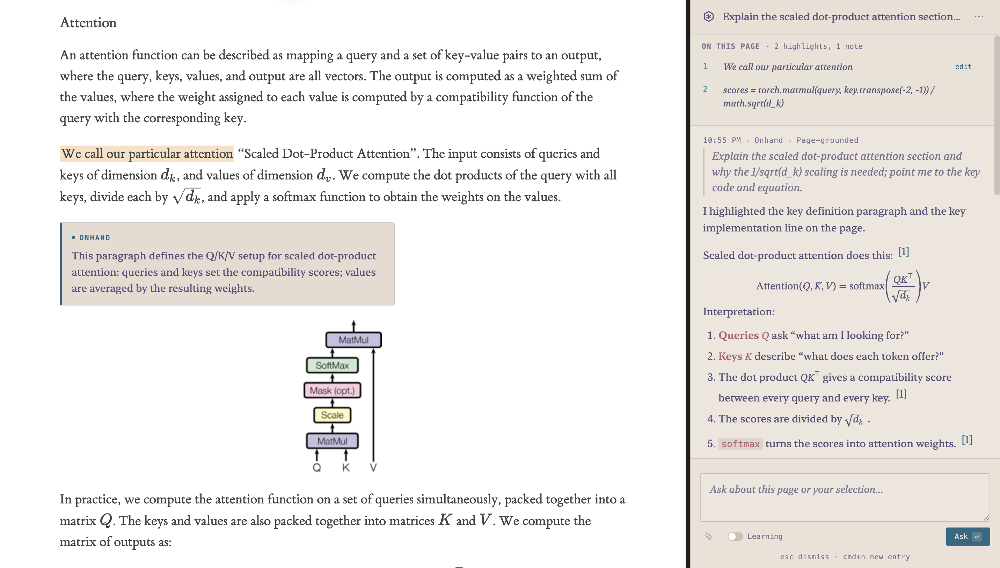

Onhand is a contextual AI for learning and research. Ask about the page you already have open. It highlights the line, leaves a note in the margin, and explains it in the side panel, where you are. No second window, no copy-paste.
git clone https://github.com/Phineas1500/Onhand && npm install && npm run build:extension

Onhand stays out of the way until you ask. When you do, it does the four things a good study partner would do.
Highlights the exact phrase or paragraph that answers your question, in gold, and scrolls the page to bring it into view. Block-level highlights for whole paragraphs, inline highlights for phrases.
Drops a sentence or two next to your highlight, written in the article's own voice, so you can keep reading without losing your place.
Every session is saved with its highlights, notes, transcript, and a snapshot of the page. Come back tomorrow to the exact state you left.
Press Voice in the side panel and talk through a paper. The realtime model can see your highlights and the visible text.
Wikipedia, an arXiv paper, a Google Doc, a Substack. Anything Chromium can render. Onhand attaches to the active tab.
Plain language. Onhand reads whatever it needs to ground the answer: the page, the selection, the visible headings.
Highlights the line, drops a margin note, answers in the side panel with citations back to the page. Then saves it all.
Download the packaged Chromium build from GitHub, unzip it, then load the
unzipped folder in chrome://extensions.
The ZIP contains the built extension with manifest.json at
the package root. Chrome still asks you to unzip it before loading.
# Clone and build $ git clone https://github.com/Phineas1500/Onhand $ cd Onhand $ npm ci $ npm run build:extension # Verify the build $ npm run smoke:browser-runtime ✓ browser runtime ready · # For a real provider call $ OPENAI_API_KEY=… npm run smoke:browser-runtime -- --real-openai
manifest.json at the top level.Cmd/Ctrl+K in the panel to focus the composer.
Apache 2.0. Onhand is open source.
Sessions stay on your machine in chrome.storage.local;
provider keys never leave your device. Helium and other Chromium-based browsers
that support chrome.debugger work too.
Each tool is a single, auditable operation against the active tab. Onhand composes them; you read the script in the side panel after every turn.
What Onhand is, what it isn't, and the principles that decide every UX call. Read this first.
Open doc ↗What's shipped, what's next, and the sequencing for PDFs, search, and richer session restore.
Open doc ↗How the gpt-realtime-2 WebRTC voice tutor works against the same page-grounded toolset.
Open doc ↗